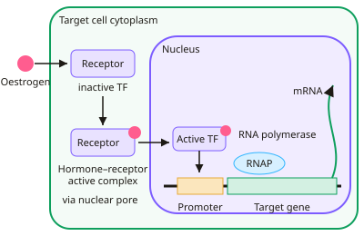

A-level Biology Year 13 · Topic 17
Regulation of gene expression in detail
Regulation of gene expression in detail looks closely at how cells decide which genes to use, and when.
We will cover transcription factors, the lac operon in bacteria, epigenetic marks on DNA and histones, and RNA interference and splicing after transcription.
Finally we see how homeobox genes and programmed cell death build the body plan of an animal.
- 5 subtopics
- 162 questions
- Free: 17.1 notes and 10 questions
In this topic
- 17.1Transcription factors and control of transcriptionFree below · 31 questions
- 17.2The lac operonOpen in Full Marks · 35 questions
- 17.3Epigenetics: DNA methylation and histone modificationOpen in Full Marks · 42 questions
- 17.4RNA interference and post-transcriptional control of gene expressionOpen in Full Marks · 24 questions
- 17.5Homeobox genes, apoptosis and the control of body plan developmentOpen in Full Marks · 30 questions
17.1 · Free notes
Transcription factors and control of transcription

Key points
- Gene expression can be controlled at several stages: transcription, post-transcription (e.g. splicing of pre-mRNA), translation and post-translation. Transcription is the main point of control.
- A transcription factor is a protein that binds to a specific base sequence on DNA (usually at or near a promoter) and changes the rate of transcription of a target gene.
- Activators (stimulators) help RNA polymerase bind to the promoter and so increase transcription. Repressors stop RNA polymerase binding, or stop activators binding, and so decrease transcription.
- A transcription factor has a DNA-binding site whose 3D shape is complementary to one particular base sequence. This is why each factor affects only certain genes.
- Eukaryotes need general transcription factors to bind to the promoter before RNA polymerase can attach and start transcription.
- Worked example: oestrogen is a lipid-soluble steroid hormone. It diffuses through the phospholipid bilayer and binds to its receptor, which is the transcription factor.
- In the absence of the hormone the receptor is inactive, because an inhibitor masks its DNA-binding site. Hormone binding causes a shape change that releases the inhibitor, so the receptor can bind the promoter of its target gene and stimulate transcription.
- Cells of one organism have the same genome, but different transcription factors are active in different cell types. This gives differential gene expression and cell specialisation.
- RNA interference (RNAi) works after transcription. Small interfering RNA (siRNA) or miRNA binds to complementary mRNA, which is then broken down or blocked, so the protein is not translated.
- Alternative splicing is a post-transcriptional control. Different combinations of exons are joined, so one gene can give different mature mRNAs and different proteins.
- Exam tip: a transcription factor changes the rate of transcription, not the DNA base sequence. Always link the shape of the DNA-binding site to its complementary base sequence.
In more detail
- Enhancers and silencers: DNA sequences that can be far from the gene; when transcription factors bind them, they loop the DNA to increase or decrease transcription.
- Oestrogen step by step: oestrogen diffuses into the cell → binds the receptor part of a transcription factor → inhibitor released → complex enters the nucleus → binds the promoter → RNA polymerase transcribes the gene.
- Same genome, different cells: a liver cell and a nerve cell contain identical DNA, but different combinations of transcription factors are active, so different proteins are made.
- Exam tip: do not say the hormone 'activates the gene'; say it activates a transcription factor that allows RNA polymerase to bind the promoter.
Practice
Transcription factors and control of transcription: 10 questions
Pick an answer to check it, or open the answer for the explanation.
1. What is a transcription factor?
- A tRNA carrying amino acids to the ribosome
- A short RNA that breaks down mRNA
- A protein binding specific DNA sequences to alter transcription
- An enzyme joining RNA nucleotides in transcription
Show answer
C: A protein binding specific DNA sequences to alter transcription. Transcription factors are proteins that bind to specific base sequences on DNA and increase or decrease the rate of transcription. RNA polymerase is the enzyme that joins the nucleotides.
2. Oestrogen is lipid-soluble. How does this allow it to affect gene transcription?
- Is transcribed by RNA polymerase into an mRNA
- Binds a surface receptor that opens nuclear pores
- Diffuses through the membrane and binds an intracellular receptor
- Is taken in by endocytosis and digested by lysosomes
Show answer
C: Diffuses through the membrane and binds an intracellular receptor. Being lipid-soluble, oestrogen crosses the phospholipid bilayer and binds its receptor (a transcription factor) inside the cell. The complex then enters the nucleus and stimulates transcription.
3. Why does one transcription factor affect only certain genes?
- It can only bind to mRNA made from the target gene
- It binds to any promoter but only works on short genes
- Its shape is complementary only to RNA polymerase
- Its DNA-binding site is complementary to a specific base sequence
Show answer
D: Its DNA-binding site is complementary to a specific base sequence. The DNA-binding site has a shape complementary to one particular base sequence, which is found only in the promoter or regulatory regions of its target genes.
4. A mutation alters the DNA-binding site of an activator transcription factor. What is the most likely effect on its target gene?
- More translation because mRNA is more stable
- Less transcription, as the factor can no longer bind the promoter
- The base sequence of the target gene changes
- No change, because RNA polymerase needs no factors
Show answer
B: Less transcription, as the factor can no longer bind the promoter. The altered shape means the factor can no longer bind its specific sequence, so RNA polymerase is not helped to bind and transcription falls. The target gene's own sequence is unchanged.
5. In the absence of oestrogen the receptor is inactive. What happens when oestrogen binds to it?
- A shape change releases an inhibitor, exposing the DNA-binding site
- The receptor attaches to ribosomes and starts translation
- The receptor is hydrolysed to release amino acids
- Introns are removed from the receptor mRNA
Show answer
A: A shape change releases an inhibitor, exposing the DNA-binding site. Hormone binding changes the receptor's shape. This releases the inhibitor and exposes the DNA-binding site, so the receptor can bind the promoter and stimulate transcription.
6. Cells treated with oestrogen contain 45 ng of a target mRNA per µg total RNA. Untreated cells contain 9 ng per µg. What is the fold increase?
- 36-fold
- 5-fold
- 4-fold
- 0.2-fold
Show answer
B: 5-fold. Fold increase = 45 ÷ 9 = 5. The value 36 is the difference in ng, not a fold change, and 0.2 is the inverse ratio.
7. Liver and neurone cells of one person have identical DNA but make different proteins. What is the best explanation?
- Ribosomes in each cell type use a different genetic code
- Different transcription factors are active, so different genes are transcribed
- Liver cells contain different alleles from neurones
- Neurones lose liver genes during differentiation
Show answer
B: Different transcription factors are active, so different genes are transcribed. All somatic cells have the same genes. Different transcription factors are active in each cell type, so different genes are transcribed (differential gene expression).
8. Small interfering RNA (siRNA) reduces expression of a gene. Which describes its action?
- It binds the promoter, blocking RNA polymerase
- It binds complementary mRNA, which is broken down, so no translation
- It adds methyl groups to cytosine in the gene
- It removes introns from pre-mRNA
Show answer
B: It binds complementary mRNA, which is broken down, so no translation. In RNA interference, siRNA pairs with complementary mRNA. The mRNA is degraded or blocked, so the protein is not translated. This happens after transcription.
9. One gene produces two different proteins in two tissues. Which process is the most likely cause?
- Semi-conservative replication
- Different base sequences of the gene in each tissue
- Different anticodons on tRNA
- Alternative splicing of pre-mRNA
Show answer
D: Alternative splicing of pre-mRNA. Alternative splicing joins different combinations of exons from the same pre-mRNA, giving different mature mRNAs and therefore different proteins from one gene.
10. A repressor transcription factor reduces transcription. Which is a way it could do this?
- Joining exons together
- Binding ribosomes
- Binding the promoter so RNA polymerase cannot attach
- Adding phosphate groups to ADP
Show answer
C: Binding the promoter so RNA polymerase cannot attach. A repressor can bind the promoter or regulatory region and prevent RNA polymerase attaching, so transcription falls. It does not act on ribosomes or splicing.
Keep going in Full Marks
Full Marks has 31 questions on Transcription factors and control of transcription (21 more than here), set out in practice levels. You also get notes and 3D models for all 5 subtopics of Regulation of gene expression in detail, plus games, timed exams and past papers.